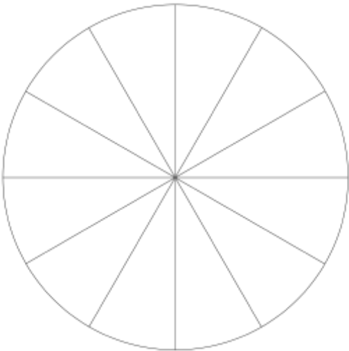

<style>
  .circle-chart__circle {
    animation: circle-chart-fill 1s reverse; /* 1 */
    animation-timing-function: ease-in-out; 
    transform: rotate(-90deg); /* 2, 3 */
    transform-origin: center; /* 4 */
  }
  
  .circle-chart__circle--negative {
    transform: rotate(-90deg) scale(1,-1); /* 1, 2, 3 */
  }
   
  /* Pie */

  svg {
     overflow: visible;
     transform: scale(0.8);
     z-index: 900;
  } 
  .pie-graph{  
    display: flex;
    align-items: center;
    justify-content: center;
    flex-direction: column;
    border: 1px solid #ccc;
    padding: 50px 25px;
  }
  .pie-graph h2{
    margin: 0px;
    font-size: 20px;
  }
  .pie-graph h2 ~ small{
    font-size: 13px;
  }
  .pie-subtext{
    color: #d5b891;
  }
  .pie-chart{
    margin: 45px 0 20px 0;
    height: 300px;
    width: 300px;
    position: relative;
  }
  .pie-percent{ 
    font-size: 14px;
    position: absolute;
    z-index: 1000;
    font-size: 18px;
    transform-origin: center;   
    animation: percent-anim 2s cubic-bezier(0.42, 0, 0, 0.96);
  } 
  .text-white{
    color: #FFF !important;
  }
  .text-dark{
    color: #000;
  }
  .pie-legend{
    display: flex; 
    min-width: 325px;
    justify-content: space-evenly;
  }
  .pie-legend-item{
    padding: 10px 10px 10px 30px;
    position: relative;
    vertical-align: middle;
  }
  .pie-legend-item:before{
    content: '';
    position: absolute;
    left: 0px;
    top: 50%;
    transform: translateY(-50%);
    height: 20px;
    width: 20px;
  }

  .legend-1:before{
    background-color: #5e5f57;
  }
  .legend-2:before{
    background-color: #d5b891;
  }
 
  /* Percentages animates last */ 
  @keyframes percent-anim{
    from{
      transform: translateY(-10px);
      opacity: 0;
    }
    to{
      transform: translateY(0px);
      opacity: 1;
    }
  }
    
  @keyframes circle-chart-fill {
    to { stroke-dasharray: 0 100; }
  }
  
  @keyframes circle-chart-appear {
    to {
      opacity: 1;
      transform: translateY(0);
    }
  }


  /* percentage positioning here 👇🏻 */
  .twelve-oclock{   left: 45%; top: 9%;}
  .eleven-oclock{   left: 23%; top: 15%;}
  .ten-oclock{      left: 12%; top: 28%;}
  .nine-oclock{     left: 5%; bottom: 45%;}
  .eight-oclock{    left: 9%; bottom: 28%;}
  .seven-oclock{    left: 23%; bottom: 15%;}
  /* symmetry */
  .six-oclock{      left: 45%; bottom: 9%;}
  .five-oclock{     right: 23%; bottom: 15%;}
  .four-oclock{     right: 9%; bottom: 28%;}
  .three-oclock{    right: 5%; top: 45%;}
  .two-oclock{      right: 9%; top: 28%;}
  .one-oclock{      right: 23%; top: 15%;}
  /* Quarterly */
  .first-quarter{ right: 15.5%; top: 20.5%;} 
  .second-quarter{ right: 15.5%; bottom: 20.5%;}
  .third-quarter{ left: 15.5%; bottom: 20.5%;}
  .fourth-quarter{ left: 15.5%; top: 20.5%;}
  
  /* Layout styles only, not needed for functionality */
  html {
    font-family: sans-serif;
    padding-right: 1em;
    padding-left: 1em; 
  }
  
  .grid {
    /* display: grid;
    grid-column-gap: 1em;
    grid-row-gap: 1em;
    grid-template-columns: repeat(1, 1fr); */
  }
  
  @media (min-width: 31em) {
    .grid {
      /* grid-template-columns: repeat(2, 1fr); */
    }
  }
  
  </style>
  
<section class="pie-graph">
  <h2>AIA Elite Conservative</h2>
  <small>Low to Medium Risk</small>
  <section class="pie-chart">  
    <span class="pie-percent text-dark fourth-quarter">30%</span>
    <span class="pie-percent text-white four-oclock">70%</span> 
    <!-- Uncomment to use as guide 🧭-->
      <!--   -->
    <svg class="circle-chart" viewbox="0 0 33.83098862 33.83098862" width="300" height="300" xmlns="http://www.w3.org/2000/svg">
      <circle class="circle-chart__background" stroke="#d5b891" stroke-width="10" fill="none" cx="16.91549431" cy="16.91549431" r="15.91549431" />
      <circle class="circle-chart__circle" stroke="#5e5f57" stroke-width="10" stroke-dasharray="70,100" stroke-linecap="circle" fill="none" cx="16.91549431" cy="16.91549431" r="15.91549431" style="padding: 100px;" />
    </svg>
  </section>
  <h1 class="pie-subtext">Illustrated Rate of Return: 5.8%</h1>
  <div class="pie-legend">
    <div class="pie-legend-item legend-1">Fixed Income</div>
    <div class="pie-legend-item legend-2">Equities</div>
  </div> 
</section>
  